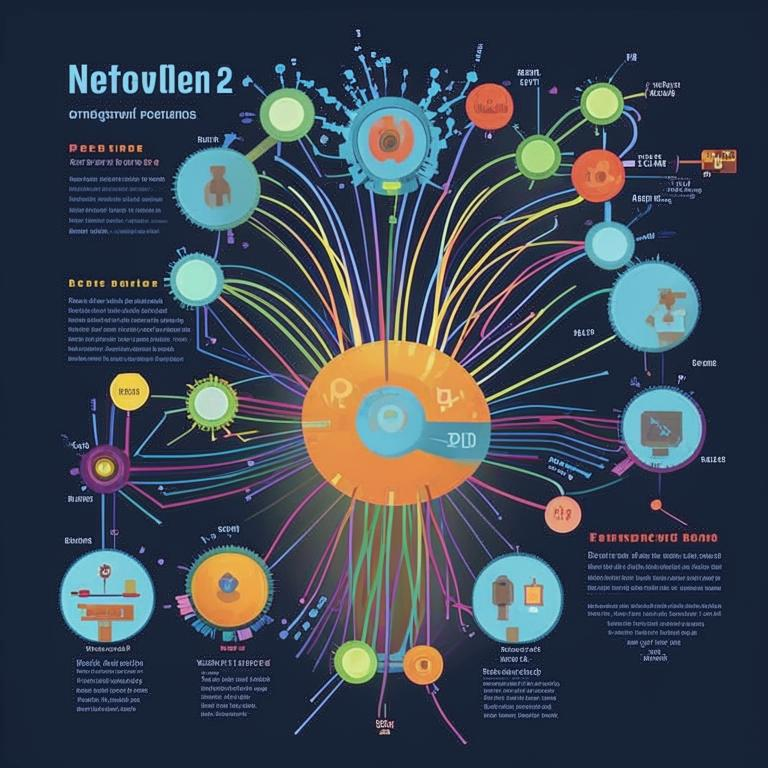
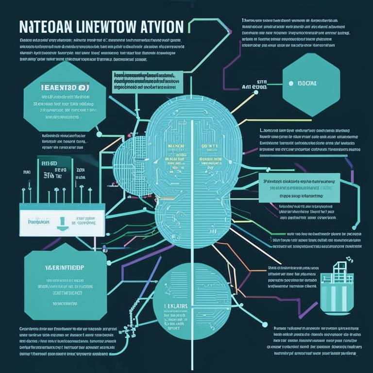
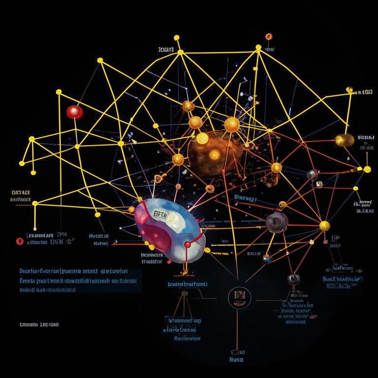

Нейросети: Опыт пользования и инструкции применения
Нейросети — это мощные инструменты, которые изменили подход к решению множества задач в различных областях, от медицины до развлечений. В этой статье мы рассмотрим, что такое нейросети, как ими пользоваться и какие практические советы могут помочь в их применении.
Что такое нейросети?
Нейронные сети — это модели, вдохновленные работой человеческого мозга, которые способны обучаться на основе данных. Они состоят из слоев нейронов, которые обрабатывают информацию и передают результаты на следующий уровень. Эти сети могут выполнять разнообразные задачи, включая классификацию, регрессию и генерацию контента.
Опыт пользования нейросетями
- Выбор платформы: Существует множество платформ для работы с нейросетями, таких как TensorFlow, PyTorch и Keras. Выбор зависит от ваших потребностей и уровня подготовки.
- Сбор данных: Для обучения нейросети необходимы качественные данные. Это может быть текст, изображения или числовые данные.
- Обучение модели: После подготовки данных необходимо настроить параметры нейросети и запустить процесс обучения. Это может занять время, в зависимости от сложности задачи и объема данных.
- Тестирование и валидация: После обучения важно проверить модель на новых данных, чтобы убедиться в её эффективности.
- Применение на практике: Результаты работы нейросети можно использовать в различных приложениях, от чат-ботов до систем рекомендаций.
Инструкции применения
- Определите задачу: Четко сформулируйте, какую задачу вы хотите решить с помощью нейросети.
- Выберите архитектуру: Исходя из задачи, выберите подходящую архитектуру нейросети (например, CNN для изображений или RNN для текста).
- Настройте гиперпараметры: Проведите эксперимент с различными гиперпараметрами, такими как скорость обучения, количество слоев и количество нейронов.
- Мониторинг и улучшение: В процессе обучения следите за метриками и при необходимости вносите изменения в модель.
Нейросети открывают широкие возможности для решения разнообразных задач. Используя правильные инструменты и подходы, вы можете значительно улучшить свои проекты и сделать их более эффективными. Не бойтесь экспериментировать и учиться на практике!